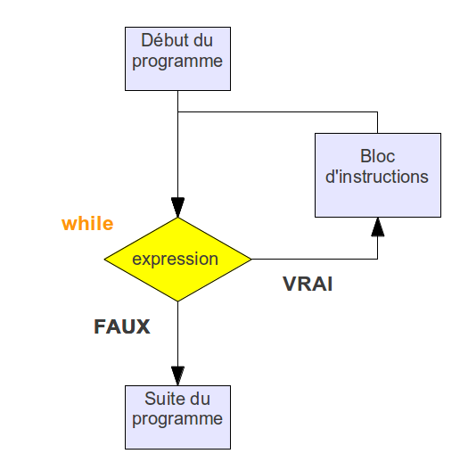

Remise à niveau : juin 2023 (Support de travail)#
Les structures de bases en Python#
If else#
structure#
opérateur de comparaison#
| Opérateur | Signification littérale |
|---|---|
| < | strictement inférieur à |
| > | strictement supérieur à |
| <= | inférieur ou égal à |
| >= | supérieur ou égal à |
| == | égal |
| != | différent de |
| Opérateur | Rôle |
|---|---|
| a and b | Vraie si a et b sont vraie |
| a or b | vraie si a ou b (ou les deux) sont vraies |
| not(a) | si a est vraie, not(a) est fausse et inversement |
Remarque : une condition peut aussi être accolée à un return dans une fonction. En voici un exemple :
La boucle while#
Structure et fonctionement#
On l'utilise lorsque l'on ne sait a priori pas combien de boucles vont être effectuées.
On l'utilise également lorsque l'on veut réaliser des incrémentations avec un pas qui ne soit pas entier, par exemple lors d'un tracé de courbe.
La boucle « tant que » exécute le corps de boucle (instructions indentées) tant qu’une condition évaluée dans le test de poursuite est vraie. Dès que la condition devient fausse, elle passe aux instructions suivantes.

Syntaxe : avec une variable compteurqui va nous servir à compter le nombre de boucle.
compteur = indice_debut # initialisation de compteur
nbre_boucle = indice_fin
while compteur < nbre_boucle : # tant que la condition est vérifiée
bloc_instruction
compteur += pas # modification de compteur
Trace#
| N° ligne | n | r | Commentaires |
|---|---|---|---|
| 1 | 4 | n \(\leftarrow\) 4 | |
| 2 | 4 | 0 | r \(\leftarrow\) 0 |
| 3 | 4 | 0 | r*r <= n ? oui, on exécute la ligne 4 |
| 4 | 4 | 1 | r+1 = 0+1 = 1 r\(\leftarrow\)1 |
| 3 | 4 | 1 | r*r <= n ? oui, on exécute la ligne 4 |
| 4 | 4 | 2 | r+1 = 1+1 = 2 r\(\leftarrow\)2 |
| 3 | 4 | 2 | r*r <= n ? oui, on exécute la ligne 4 |
| 4 | 4 | 3 | r+1 = 2+1 = 3 r\(\leftarrow\)2 |
| 3 | 4 | 3 | r*r <= n ? non, on exécute la ligne 5 |
| 5 | 4 | 2 | r-1 = 3 - 1 = 2 r\(\leftarrow\)2 |
La boucle for#
La boucle for permet d’effectuer un nombre de fois
bien déterminé le corps de boucle (séquence d'instructions). Elle
s'utilise généralement avec la fonction range qui permet
de générer une séquence de nombres entiers allant de 0 à
n exclu.

Syntaxe :
Les fonctions#
Pour définir un fonction nommée fonctionqui prend deux nombres en argument a et b et qui retourne la variable c, on écrit:
Exercices#
Exercice 1:
Écrire un programme qui prend comme argument le rayon(int) et la hauteur(int) du cône et qui calcule et retourne le volume du cône droit.
Exercice 2:
Faire une fonction qui demande un nombre et qui affiche sa racine carrée et son carré.
Exercice 3 :
Faire la trace d’exécution du programme suivant et expliquer ce que fait le programme. Proposer ensuite une manière plus simple d’écrire la condition de la boucle while, faire à nouveau la trace pour vérifier que l’on parvient au même résultat
Exercice 4 :
Effectuer la trace du programme suivant :
Exercice 5:
L’«ASCII Art» consiste à utiliser les caractères alphanumériques du code ASCII pour produire des images. Nous allons commencer par dessiner un carré à l’aide de la lettre X. Écrire une fonction qui affiche le carré (ci-dessous en taille 8) et qui prend en paramètre la longueur du côté.
Exercice 6 :
A l'aide de la bibliothèque Turtle, écrire :
- une fonction qui réalise une carré ;
- une fonction qui réalise un triangle ;
- une fonction qui réalise une maison.
Exercice 7 :
Un ordinateur manipule des nombres écrits en binaire : uniquement avec les chiffres «0» et «1». Par exemple le nombre 26 s'écrit 11010 en binaire.
Chaque «0» et «1» d'une écriture binaire est appelé bit. Ainsi, le nombre s'écrit en binaire sur \(n\) bits.
Pour savoir combien de bits sont nécessaires pour écrire en binaire un nombre entier strictement positif on compte le nombre de divisions euclidiennes par nécessaires pour obtenir un quotient nul.
En partant de 26, on a :
- \(26 = 2 \times 13 + 0\)
- \(13 = 2 \times 6 + 1\)
- \(6 = 2 \times 3 + 0\)
- \(3 = 2 \times 1 + 1\)
- \(1 = 2 \times 0 + 1\)
Comme on peut le voir, 5 divisions euclidiennes ont été nécessaires pour passer de 26 à 0 : 26 s'écrit donc sur 5 bits en binaire.
On rappelle que l'opérateur // permet d'obtenir le quotient de deux nombres : 13 // 2 est évalué à 6.
Écrire la fonction nb_bits qui prend en argument un nombre entier strictement positif et renvoie le nombre de bits nécessaires à son écriture en binaire.
Exercice 8 :
Les années bissextiles comportent 366 jours. Contrairement à ce que l'on pense couramment, elles ne se rencontrent pas exactement tous les 4 ans !
En effet :
- une année non divisible par 4 n'est pas bissextile ;
- parmi les années divisibles par 4 :
- les années qui ne sont pas divisibles par 100 sont bissextiles ;
- parmi les années divisibles par 100 :
- les années qui ne sont pas divisibles par 400 ne sont pas bissextiles,
- les autres sont bissextiles.
Par exemple :
- 2022 n'est pas divisible par 4 : elle n'est pas bissextile ;
- 2020 est divisible par 4, mais pas par 100 : elle est bissextile ;
- 2100 est divisible par 4, par 100, mais pas par 400 : elle n'est pas bissextile ;
- 2400 est divisible par 4, par 100 et par 400 : elle est bissextile.
Écrire la fonction est_bissextile renvoyant True si l'année passée en argument est bissextile, False dans le cas contraire.
Exercice 9 :
Écrire la fonction facto qui donne la factorielle d'un nombre \(n\). On rappelle que factorielle de 5 s'écrit : \(5! = 5 \times 4 \times 3 \times 2 \times 1\).
Exercice 10 :
Écrire la fonction sommequi retourne la somme des \(n\) premiers entiers. Exemple :
somme(5) = 5 + 4 + 3 + 2 + 1
Exercice 11 :
Programmer la fonction multiplication, prenant en paramètres deux nombres entiers \(n1\) et \(n2\), et qui renvoie le produit de ces deux nombres. Les seules opérations autorisées sont l’addition et la soustraction.
Exemples :
Les listes#
Définitions#
Une liste est une structure de données qui contient une série de valeurs. Python autorise la construction de liste contenant des valeurs de types différents (par exemple entier et chaîne de caractères), ce qui leur confère une grande flexibilité. Une liste est déclarée par une série de valeurs (n'oubliez pas les guillemets, simples ou doubles, s'il s'agit de chaînes de caractères) séparées par des virgules, et le tout encadré par des crochets. En voici quelques exemples :
>>> animaux = ["girafe", "tigre", "singe", "souris"]
>>> tailles = [5, 2.5, 1.75, 0.15]
>>> mixte = ["girafe", 5, "souris", 0.15]
>>> animaux
['girafe', 'tigre', 'singe', 'souris']
>>> tailles
[5, 2.5, 1.75, 0.15]
>>> mixte
['girafe', 5, 'souris', 0.15]
Lorsque l'on affiche une liste, Python la restitue telle qu'elle a été saisie.
Les instructions utiles#
La fonction len()#
L'instruction len() permet de connaître la longueur d'une liste, c'est-à-dire le nombre d'éléments que contient la liste. Voici un exemple d'utilisation :
La méthode .append()#
La méthode .append() ajoute un élément à la fin d'une liste :
La méthode .pop()#
La méthode .pop() en Python est une fonction qui permet de supprimer un élément d'une liste et de renvoyer la valeur de l'élément supprimé. Elle peut prendre un argument optionnel, qui est l'index de l'élément à supprimer. Si aucun index n'est spécifié, la méthode pop() supprimera et renverra le dernier élément de la liste.
La fonction del#
L'instruction del supprime un élément d'une liste à un indice déterminé :
La méthode remove()#
La méthode .remove() supprime un élément d'une liste à partir de sa valeur :
La méthode .reverse()#
La méthode .reverse() inverse une liste :
Balayage d'une liste#
Balayage par indice#
Balayage par élément#
Exercices#
Exercice 1 :
Écrire une fonction genereTabqui prend en argument 2 entiers et retourne un tableau de longueur égale au 1er argument et dont chaque élément est un nombre entier aléatoire compris entre 0 et le 2nd argument (inclus).
Exercice 2 :
Écrire une fonction moyenne qui prend en argument une liste contenant les notes. La fonction retournera la moyenne des notes.
Exercice 3 :
Écrire une fonction carre(n) qui renvoie le tableau des carrés des nombres entiers compris entre 0 et n-1.
Exercice 4 :
Écrire une fonction imagesf(deb,fin) qui renvoie le tableau des images des nombres entiers compris entre deb et fin par la fonction \(f:x \rightarrow 3x^2 - 2x + 1\)
Exercice 5 :
Programmer la fonction derniere_occurrence, prenant en paramètre un tableau non vide d'entiers et un entier cible, et qui renvoie l'indice de la dernière occurrence de cible.
Si l'élément n'est pas présent, la fonction renvoie la longueur du tableau.
Exercice 6 :
Écrire les fonctions suivants :
- Maximum : déterminer le maximum dans un tableau ;
- Indice du minimum : déterminer l'indice du minimum dans un tableau ;
- Premier minimum local : déterminer l'indice du premier minimum dans un tableau ;
- Occurrences du minimum : déterminer la valeur et les indices du minimum ;
- Valeur et indices du max : déterminer la valeur et les indices du maximum.
Les dictionnaires#
Définition#
Comme on l’a vu avec les listes à partir des types de base (int, float, etc.) il est possible d’élaborer de nouveaux types qu’on appelle des types construits.
Un nouvel exemple de type construit est le dictionnaire.
Les éléments d’une liste ou d’un tuple sont ordonnés et on accéde à un élément grâce à sa position en utilisant un numéro qu’on appelle l’indice de l’élément.
Un dictionnaire en Python va aussi permettre de rassembler des éléments mais ceux-ci seront identifiés par une clé. On peut faire l’analogie avec un dictionnaire de français où on accède à une définition avec un mot.
Contrairement aux listes qui sont délimitées par des crochets, on utilise des accolades pour les dictionnaires.
Un élément a été défini ci-dessus dans le dictionnaire en précisant une clé au moyen d’une chaîne de caractères suivie de : puis de la valeur associée
clé: valeur
On accède à une valeur du dictionnaire en utilisant la clé entourée par des crochets avec la syntaxe suivante :
Exercices#
Exercice 1 :
Sur le réseau social TipTop, on s’intéresse au nombre de « like » des abonnés. Les données sont stockées dans des dictionnaires où les clés sont les pseudos et les valeurs correspondantes sont les nombres de « like » comme ci-dessous :
{'Bob': 102, 'Ada': 201, 'Alice': 103, 'Tim': 50}
Écrire une fonction max_dico qui :
- Prend en paramètre un dictionnaire
diconon vide dont les clés sont des chaînes de caractères et les valeurs associées sont des entiers ; -
Renvoie un tuple dont :
- La première valeur est la clé du dictionnaire associée à la valeur maximale ;
- La seconde valeur est la première valeur maximale présente dans le dictionnaire.
Exemples :